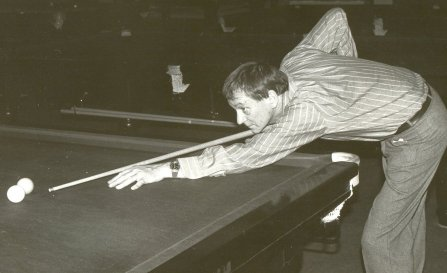
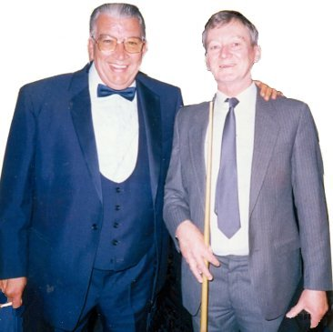
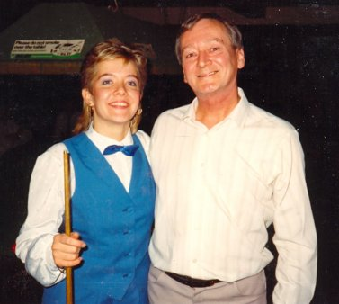

SNOOKER
Four Blacks for a Pound!

The least said the better! I used to play at school over Penge "Burton's"
on a Friday afternoon, skipping art lessons. The cost was in the region of
10d. (4p.) for an hour I remember. Later when we moved to Gillingham I used
to play my dad every Monday evening at the Gillingham Liberal Club,
opposite Surridge Dawson's 'shop' in Canterbury Street' That was only 6d.
for how ever long you got on the meter - best part of an hour I think. We
used to play 150 up billiards, which he always won, and then three frames
of snooker, which I sometimes won. If I looked like winning he would buy me
a cherry-b or a babycham which usually worked for him!
When Brian Cutler joined us (about 1956) I took him to the Frindsbury
Working Man's club and taught him the basics. Some 30 years later out of
the blue he phoned and asked if I would like a game. Needless to say, he
floored me! Following that we met each Wednesday over Burtons in Gillingham
High Street where 'Mick' was the owner. It was a perfect old world billiard
hall. Cups of tea and cheese rolls were the order of the day. We would play
around ten frames at a session, and I used to keep a diary of the
winning/losing trying to reach 100 frames before Brian. The first session
Brian won, and the second 100 wins were mine.
Brian was a member of the Rochester Corporation Club, opposite the Casino
in Rochester. He persuaded them to enter a team into the Medway and
district snooker league, and he, I and Brian Pearson formed a team of three
to play every Wednesday evening. It was great fun, and after the season
finished there seemed to be a crisis with the organisation of the
tournaments etc., I kept away from the AGM not caring for meetings and the
like, but Brian offered my help saying I had a computer and could easily do
it all. - As if I wasn't busy enough already. This would have been around 1984
Well, I was press ganged in as tournament secretary and wrote the necessary
software to draw all the matches for all the competitions, Snooker Singles,
Billiards, Doubles, Team Knockout. Plus all the regular Wednesday matches
and fixture lists. Quite a daunting project as you can imagine. The first
thing I decided was that there should be an entry fee for everything to
cover the cost of running the show, and surprisingly in the first year we
had enough surplus to buy a new computer for the incoming tournament
secretary. The most difficult aspect was arranging the table usage when a
club only had one table, but two teams entered. I found the answer to this
problem in the 'Darts Diary' It was not the sort of problem I had come
across before. The next problem was getting the results in, and with the
surplus funds we also bought an answerphone and had a dedicated line
installed so that people could phone their results through at any time of
the day or night. At the height of it's popularity we had four divisions of
12 teams. Our team made it once into the top 'Division one' for just one season.
They were all too good for us and I was relieved to be relegated to the
second division.
We later played for the Strood Snooker Club run by Geoff Dobberson and
Sandra his wife. Each year we got to play against some real professional
people. I played Cliff Wilson who was absolutely magic, and the delightful
(Ladies World Champion) Miss Allison Fisher.

I played only a couple of shots, potting a good long red and finishing in
baulk, to which she commented - good shot, except that two seconds later I
cracked the brown into the right centre pocket, only to see my white screw
back into the yellow pocket. - she then cleaned up!
After my demise, our club super star Mark Boyd tried his luck. He had the
previous week, having been given a three black start managed to beat Steve
Davis at Gravesend with a 65 opening break. However, on this night he won
the toss against Allison and elected to break. - That was his last and only
shot. She potted every ball! A night to remember ! I bet he does! ....
there is a whole lot more!
See Tony Clean up -
then press 'BACK' on the browser